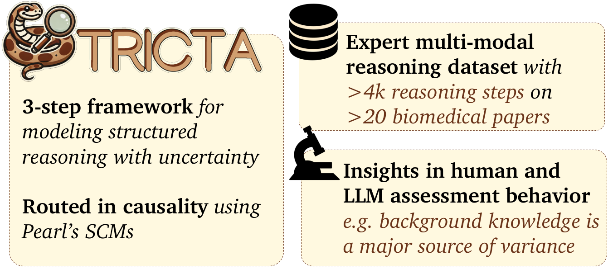
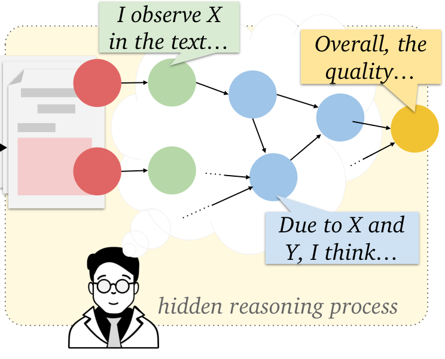
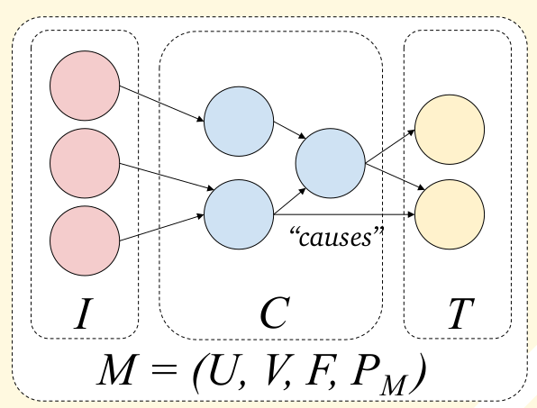
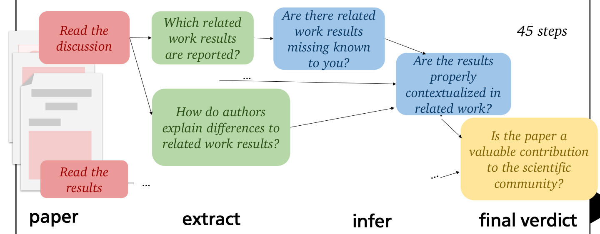
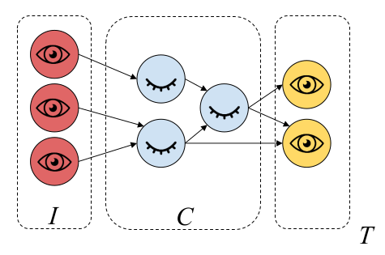

Critical text assessment is at the core of many expert activities, such as fact-checking, peer review, and essay grading. Yet, existing work treats critical text assessment as a black box problem, limiting interpretability and human-AI collaboration. To close this gap, we introduce Structured Reasoning In Critical Text Assessment (STRICTA), a novel specification framework to model text assessment as an explicit, step-wise reasoning process. STRICTA breaks down the assessment into a graph of interconnected reasoning steps drawing on causality theory (Pearl, 1995). This graph is populated based on expert interaction data and used to study the assessment process and facilitate human-AI collaboration. We formally define STRICTA and apply it in a study on biomedical paper assessment, resulting in a dataset of over 4000 reasoning steps from roughly 40 biomedical experts on more than 20 papers. We use this dataset to empiricallystudy expert reasoning in critical text assessment, and investigate if LLMs are able to imitate and support experts within these workflows. The resulting tools and datasets pave the way for studying collaborative expert-AI reasoning in text assessment, in peer review and beyond.




@misc{dycke2025stricta,
title={STRICTA: Structured Reasoning in Critical Text Assessment for Peer Review and Beyond},
author={Nils Dycke and Matej Zečević and Ilia Kuznetsov and Beatrix Suess and Kristian Kersting and Iryna Gurevych},
year={2025},
eprint={2409.05367},
archivePrefix={arXiv},
primaryClass={cs.CL},
url={https://arxiv.org/abs/2409.05367},
}